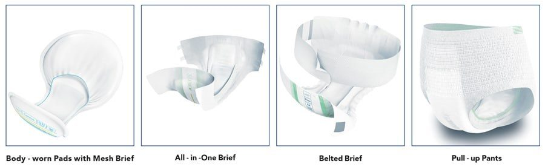
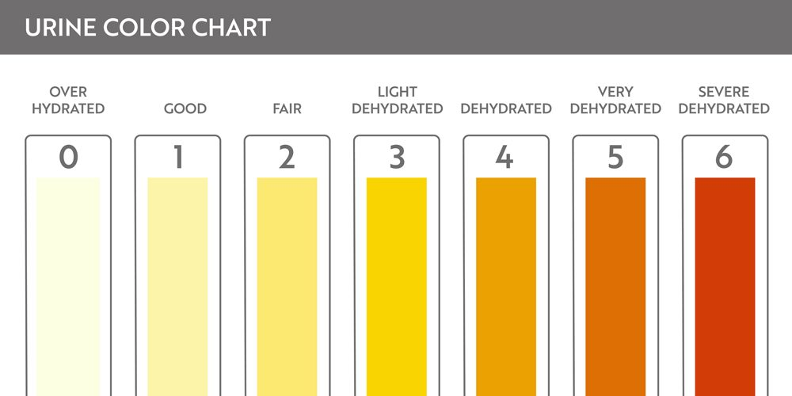
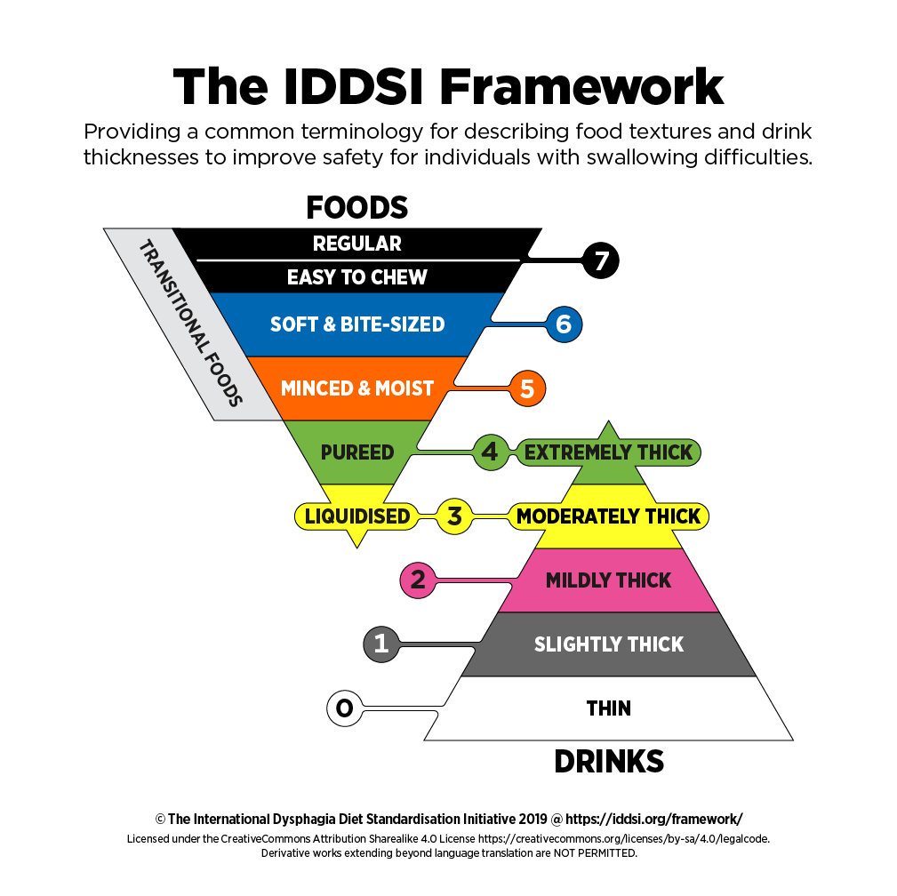
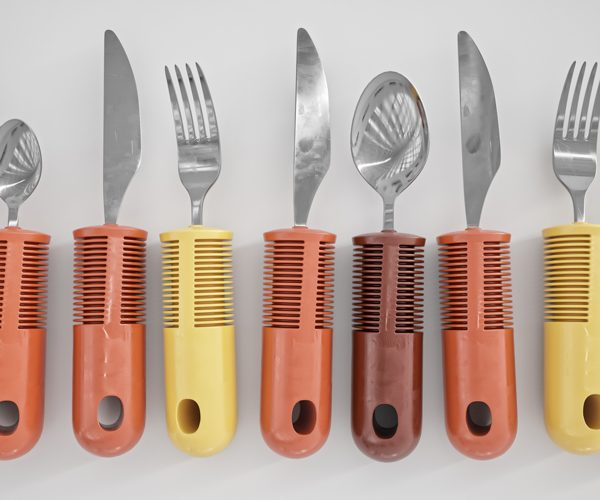
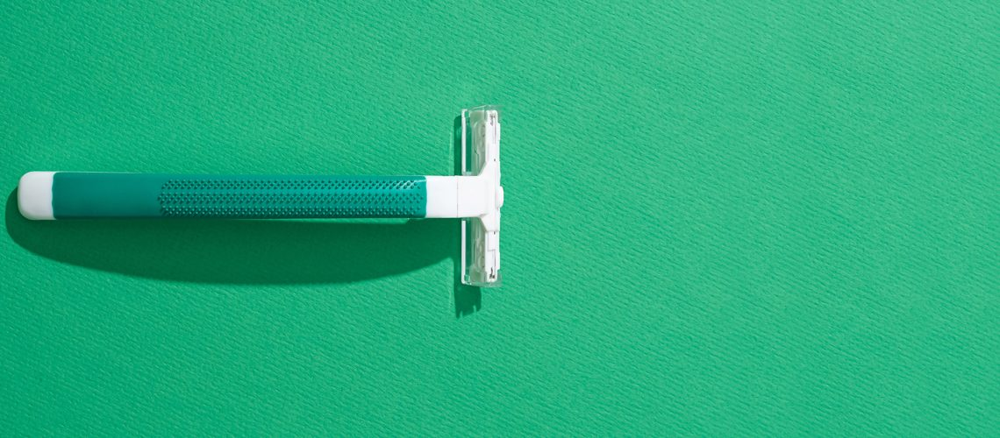
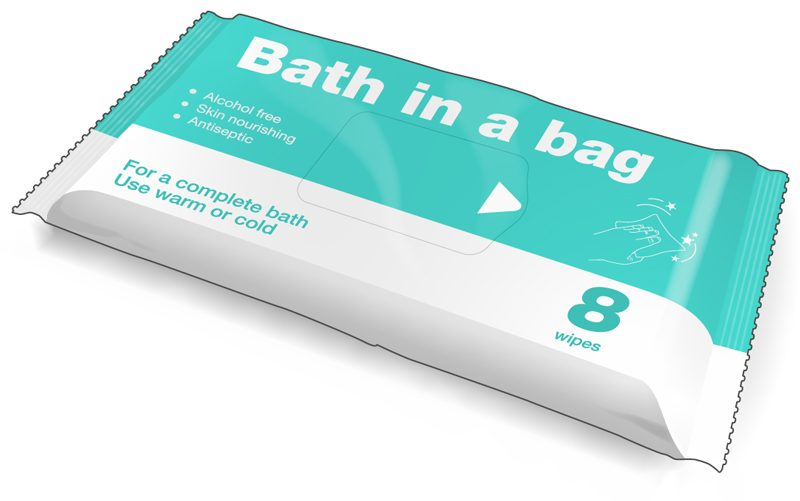
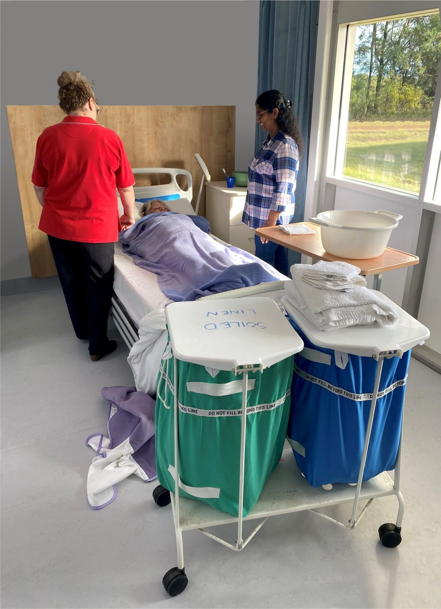
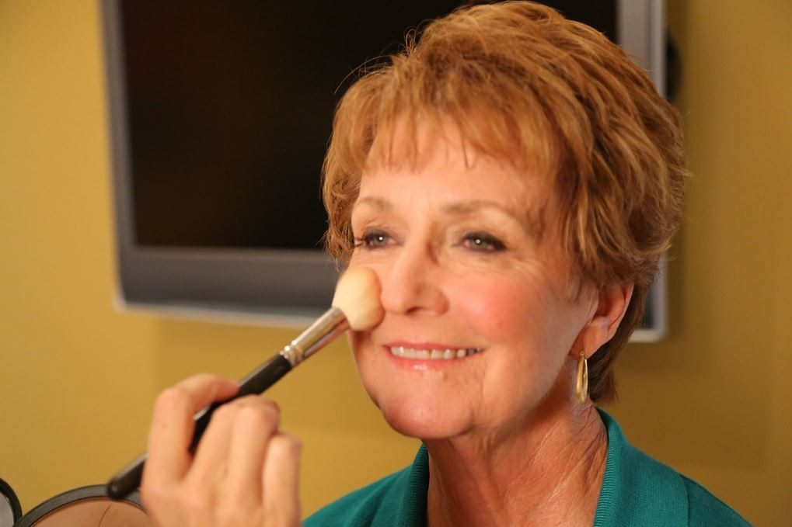
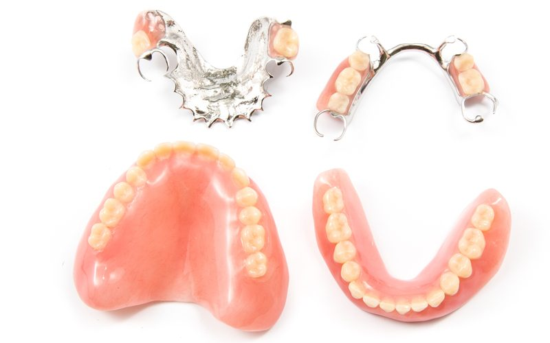

CHCCCS031 CHCCCS040 Individual Support and Wellbeing Cluster · Lesson 5
Personal care with Juan
A morning with Juan: the urine bottle, what is normal, hand hygiene, meals, shaving, showering, the bed bath, grooming, dentures, reporting and privacy.
It is 7.45 in the morning and you are Juan's support worker for the next three hours. In this lesson you follow the shift step by step, the same way your assessment does: the urine bottle, breakfast, shaving, the shower, getting dressed, his denture, and getting ready to go out. At every step ask: What can Juan do himself? How do I keep him safe? How do I protect his privacy?
Juan wants to use the urine bottle before he gets out of bed. Your assessment asks for a detailed explanation, including safe manual handling. Every step counts.
Listen to the explanation
NP11 S2 P1Knock, introduce yourself, explain what you will do, and get Juan's consent. Tell him each step as you go.
NP11 S2 P2Privacy: close the door and curtains.
NP11 S2 P3Hand hygiene, then put on gloves.
NP11 S2 P4Position him safely: raise the bed to a safe working height, help him sit up or roll a little using a slide sheet if he needs it. Never drag him.
NP11 S2 P5Give him the bottle. Help him place it correctly only as much as he needs (remember his left hand). Cover him with the sheet.
NP11 S2 P6Make sure the call bell is in reach, then leave the room to give him privacy, if it is safe.
NP11 S2 P7When he calls: put on gloves, remove the bottle carefully, cover it, and help him get comfortable.
NP11 S2 P8Look at the urine (colour, amount, smell), empty it in the toilet, clean the bottle and put it back in its place.
NP11 S2 P9Remove your gloves, do hand hygiene, and offer Juan a hand wash. Lower the bed. Record and report anything unusual.

Watch: Assisting a male resident with a urinal
KAMA policy and procedure Copy the original procedure into your assessment. Do not write your own.
When you help with toileting, you look at what comes out. You are often the first person to notice a change. The Bristol Stool Chart gives every type a number, so everyone uses the same words. Press Play all and watch the person on the toilet.
Listen to the explanation
Press a type, or Play all.
Bristol Stool Chart
1 hard23 normal4 ideal567 liquid
The Bristol Stool Chart. Press a type, or Play all.
NP11 S3 P1Stools (poo): types 3 and 4 are normal. Types 1 and 2 mean constipation. Types 6 and 7 mean diarrhoea. Report constipation, diarrhoea, and any blood, black or very pale stools.
NP11 S3 P2Stools change with food and drink, how the bowel works, illness, medication and the person's habits.
NP11 S3 P3Urine (wee): an adult passes about 1 to 1.5 litres a day. Normal urine is straw coloured, clear, with only a slight smell.
NP11 S3 P4The colour shows how much the person drinks and how the kidneys work. Dark, cloudy, smelly, red or brown urine must be reported.
NP11 S3 P5Write what you see in the progress notes or bowel chart, and tell your supervisor about anything unusual.

Urine colours and what they may mean
Pale straw, clear Normal: well hydrated
Yellow Normal
Dark yellow Needs more to drink
Amber or honey Dehydrated: offer drinks, report
Brown, like cola Report straight away
Pink or red Possible blood: report straight away
Cloudy, strong smell Possible infection: report
Try itBristol types
Match each type to what it means.
The notes above will blur while you try. You can peek any time.
Dysphagia means difficulty swallowing. It is common after a stroke (remember Solomon) and in older age. Food or drink can go into the lungs and cause choking or pneumonia.
Listen to the explanation
NP11 S5 P1A speech pathologist assesses the person and decides the safe food texture and drink thickness.
NP11 S5 P2The levels come from IDDSI, a worldwide framework: drinks from 0 (thin) to 4 (extremely thick), foods from 3 (liquidised) to 7 (regular).
NP11 S5 P3Always give exactly the texture and thickness in the plan. Never "a little bit" of something else.
NP11 S5 P4Sit the person upright, offer small mouthfuls, go slowly, and stay with them. Watch for coughing, a wet voice or choking, and report it.
NP11 S5 P5Remember Solomon: his food must be kosher AND the right texture.

Click the picture to see it full screen.
Watch: What can I do about swallowing difficulties? (Dysphagia) (GutDr)
Watch: How to feed someone with difficulty swallowing (Hosparus Health)
Juan has breakfast in the dining room. Your assessment asks how to make the dining room pleasant, and which aids help Juan eat and drink by himself.
Listen to the explanation
NP11 S6 P1Temperature: not too hot, not too cold, so he is comfortable.
NP11 S6 P2Smells: pleasant, no bad odours.
NP11 S6 P3Light: bright enough to see the food.
NP11 S6 P4Table: clean and tidy, or a clean tablecloth.
NP11 S6 P5Place setting: cutlery, cup and condiments set up within easy reach, in the right places for him.
NP11 S6 P6Noise: turn off loud, annoying noise. Friendly chatter or soft music can be welcoming.
NP11 S6 P7Aids for Juan: modified cutlery (thick or bent handles) that is easier to hold, a non-slip mat to stop the plate moving, a lip plate (raised edge) to push food onto the spoon.

Watch: Getting the dining experience right (Aged Care Quality and Safety Commission)
KAMA policy and procedure Copy the original procedure into your assessment. Do not write your own.
After breakfast you help Juan onto his mobile shower chair. He likes to shave before his shower. Your assessment asks how you set up the space and equipment so he can shave by himself.
Listen to the explanation
NP11 S7 P1Gather everything he needs: razor, shaving cream or gel, a mirror, a face washer, a towel.
NP11 S7 P2Place it within reach, in the order he will use it, for example on the bench next to the sink or behind the sink.
NP11 S7 P3Position Juan in front of the sink so he does not have to bend or stretch to reach the sink, the taps or his things.
NP11 S7 P4Put a towel over his lap, so it is easy for him to reach.
NP11 S7 P5Then step back: let him do it. Help only if he asks or needs it.

Watch: Helping someone shave (CareChannel)
KAMA policy and procedure Copy the original procedure into your assessment. Do not write your own.
Some people cannot get to the shower, so you wash them in bed. Your assessment asks what you wash first, the equipment you need, and the errors in a picture.
Listen to the explanation
NP11 S9 P1What do you wash first? The face. (The choices are: Face, Arms, Legs, Feet.) You wash from the cleanest areas to the dirtiest.
NP11 S9 P2Equipment and resources: a basin and wash cloths (or a bath in a bag), sheets, towels, toiletries, clean clothes, continence aids, PPE (gloves, apron) and a dirty linen skip.
NP11 S9 P3Errors in the picture (staff getting ready for Joan's bed bath): the curtains are open; the bed is too low; clean linen is on the dirty linen skip; dirty linen is on the floor; a bed pan is on the bedside table; a toothbrush is next to the bed pan; the staff are not wearing PPE; no toiletries and no change of clothes are ready.


Click the picture to see it full screen.
Watch: How to give a bed bath: tips for caregivers (Hosparus Health)
KAMA policy and procedure Copy the original procedure into your assessment. Do not write your own.
10 Grooming, and letting Juan choose his clothes **
Grooming is how a person presents themselves to the world. Your assessment asks for four grooming actions, and how you help Juan choose what to wear.
Listen to the explanation
NP11 S10 P1Grooming actions: putting on moisturiser, powder, makeup, styling hair, perfume or cologne, putting on jewellery, trimming facial hair, filing fingernails.
NP11 S10 P2Always follow the person's own style and choices.
NP11 S10 P3Choosing clothes: ask Juan what he would like to wear today (he is going to lunch with friends), and ask if he would like help to get those clothes out.
NP11 S10 P4Do not choose for him. Offer two or three options if that helps.

Try itGrooming?
Which of these are grooming actions?
The notes above will blur while you try. You can peek any time.
Juan sleeps with his top denture in and cleans around it after every meal. Today the top denture falls down onto his tongue when he opens his mouth. He says, "It's fine. I'll put more denture glue on." He agrees to see a specialist.
Listen to the explanation
NP11 S11 P1Impact of a loose denture: it rubs on the gums, causing pain and ulcers. The pain can make eating hard and limit the foods he can eat.
NP11 S11 P2Signs of a poorly fitting denture: a clicking sound when talking, the top denture dropping when he opens his mouth or talks, a pained face when eating, regular sore gums, trouble swallowing or speaking.
NP11 S11 P3Gums shrink over time after teeth are taken out, so dentures can become loose.
NP11 S11 P4When you clean a denture, look for: cracks, chips and other imperfections that could cause pain, and make sure all food is removed.
NP11 S11 P5Natural teeth: use a toothbrush with a small head and soft bristles. Brush gently in small circles, covering the front and back of all teeth, top and bottom. Gently brush along the gum line.

Watch: Denture care: how to clean dentures (RegisteredNurseRN)
Watch: Brushing someone else's teeth (University of Manitoba)
KAMA policy and procedure Copy the original procedure into your assessment. Do not write your own.
12 Reporting the denture problem: write it AND say it **
Juan agreed to see a specialist. Your organisation can only help him get a referral if you tell them. Your assessment asks what you document and verbally report.
Listen to the explanation
NP11 S12 P1Write a progress note: what you saw (the top denture falls onto his tongue when he opens his mouth) and the conversation with Juan (he said it is fine and he would use more glue; he agreed to a specialist appointment).
NP11 S12 P2Tell your supervisor (verbal report), so they can follow up with Juan and make the appointment.
NP11 S12 P3Write facts, in plain words, with the date, time and your name. Do not guess or give opinions.
KAMA policy and procedure Copy the original procedure into your assessment. Do not write your own.
Your assessment asks which activities this shift helped Juan keep or build his skills. Look back at the morning. Every time Juan did it himself, he kept a skill.
Listen to the explanation
NP11 S13 P1Shaving himself.
NP11 S13 P2Doing most of his undressing, showering and dressing.
NP11 S13 P3Using the urine bottle.
NP11 S13 P4Fitting his own uridome before going out.
NP11 S13 P5Making his own decisions: choosing his clothes and agreeing to the specialist appointment.
Try itJuan or the worker?
Who did it? Only Juan's actions keep his skills.
The notes above will blur while you try. You can peek any time.
The taxi driver is your friend Leo. A week later at a party he asks: "What happened to his left hand? Can he walk? Has he ever crashed the wheelchair?" Your assessment asks how you answer politely, and how you say it.
Listen to the explanation
NP11 S14 P1How you say it: a calm, friendly face and a gentle voice. You are not angry with Leo, you are protecting Juan.
NP11 S14 P2What you say: "Sorry Leo, I can't share any personal information about Juan without his permission. It would hurt Juan and the trust we have built, it could cause problems in his life, and I could lose my job."
NP11 S14 P3This is confidentiality. Keeping it is part of your professional duty and your organisation's privacy policy. It applies everywhere, at work and outside work, including on social media.
KAMA policy and procedure Copy the original procedure into your assessment. Do not write your own.